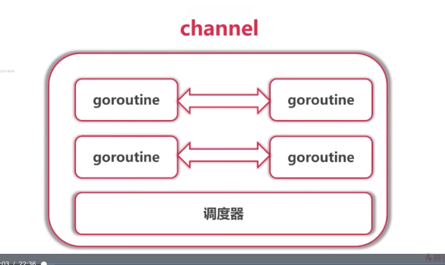
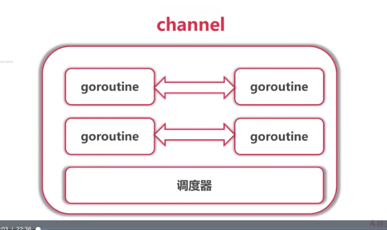

7.2_channel
 

1、定义：
1.1 用make函数来创建
无缓冲区：make(chan Type)
有缓冲区：make(chan type,capacity)
func chanDemo1() {
c := make(chan int)
c <- 1
c <- 2
n := c
fmt.Println(n)
}
func chanDemo2() {
c := make(chan int)
go func() {
for {
n := <-c
fmt.Println(n)
}
}()
c <- 1
c <- 2
time.Sleep(time.Millisecond)
}
func main() {
//chanDemo1() //报错：all goroutines are asleep - deadlock!
chanDemo2() //协程处理

1.2实现同步
//全局变量，创建一个channel
var ch = make(chan int)
//定义一个打印机，参数为字符串，按每个字符打印
//打印机属于公共资源
func Printer(str string) {
for _, data := range str {
fmt.Printf("%c", data)
time.Sleep(time.Second)
}
fmt.Printf("\n")
}
//person1执行完后，才能到person2执行
func person1() {
Printer("hello")
ch <- 666 //给管道写数据，发送
}
func person2() {
<-ch //从管道取数据，接收，如果通道没有数据他就会阻塞
Printer("world")
}
func main() {
//新建2个协程，代表2个人，2个人同时使用打印机
go person1()
go person2()
//特地不让主协程结束，死循环
for {
}
}
1.3channel无缓存

1.4channel有缓存

1.5close
 发送方去close
发送方去close
1.6、range 遍历
2、csp模型：不要通过共享内存来通信，通过通信来共享内存
3、单项channel
func main() {
//创建一个channel, 双向的
ch := make(chan int)
//双向channel能隐式转换为单向channel
var writeCh chan<- int = ch //只能写，不能读
var readCh <-chan int = ch //只能读，不能写
writeCh <- 666 //写
//<-writeCh //err, invalid operation: <-writeCh (receive from send-only type chan<- int)
<-readCh //读
//readCh <- 666 //写， err, invalid operation: readCh <- 666 (send to receive-only type <-chan int)
//单向无法转换为双向
//var ch2 chan int = writeCh //cannot use writeCh (type chan<- int) as type chan int in assignment
}
4、应用
//此通道只能写，不能读
func producer(out chan<- int) {
for i := 0; i < 10; i++ {
out <- i * i
}
close(out)
}
//此channel只能读，不能写
func consumer(in <-chan int) {
for num := range in {
fmt.Println("num = ", num)
}
}
func main() {
//创建一个双向通道
ch := make(chan int)
//生产者，生产数字，写入channel
//新开一个协程
go producer(ch) //channel传参，引用传递
//消费者，从channel读取内容，打印
consumer(ch)
}